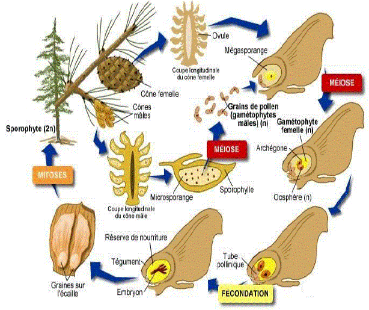
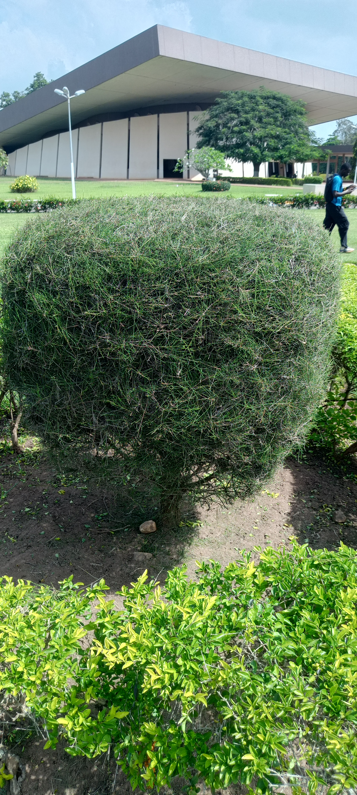

Les conifères ou gymnospermes des plantes vasculaires qui ont apparues sur terre il y a environ 350 millions d’années. sont caractérisés leur absence de fleur, de fruit et la présence de cônes ouvert ayant la même fonction que la fleur. Les conifères possèdent de longues feuilles et fines qui leur permettent de résister à la secheres se. Les conifères ont été les premières à développer le pollen comme moyen de reproduction.
Les conifères les plus répandus sont les pins, cèdres, sapins, épicéas, tsugas, douglas, mélèzes, cyprès, genévriers, araucarias, agathis, podocarpes, séquoias, thuyas et les ifs

CYCLE DE REPRODUCTION DES GYMNOSPERMES
Source: takween.com

Un conifère de l’espèce esquisetifolia (Casuarina esquisetifolia), plant d’ornement.